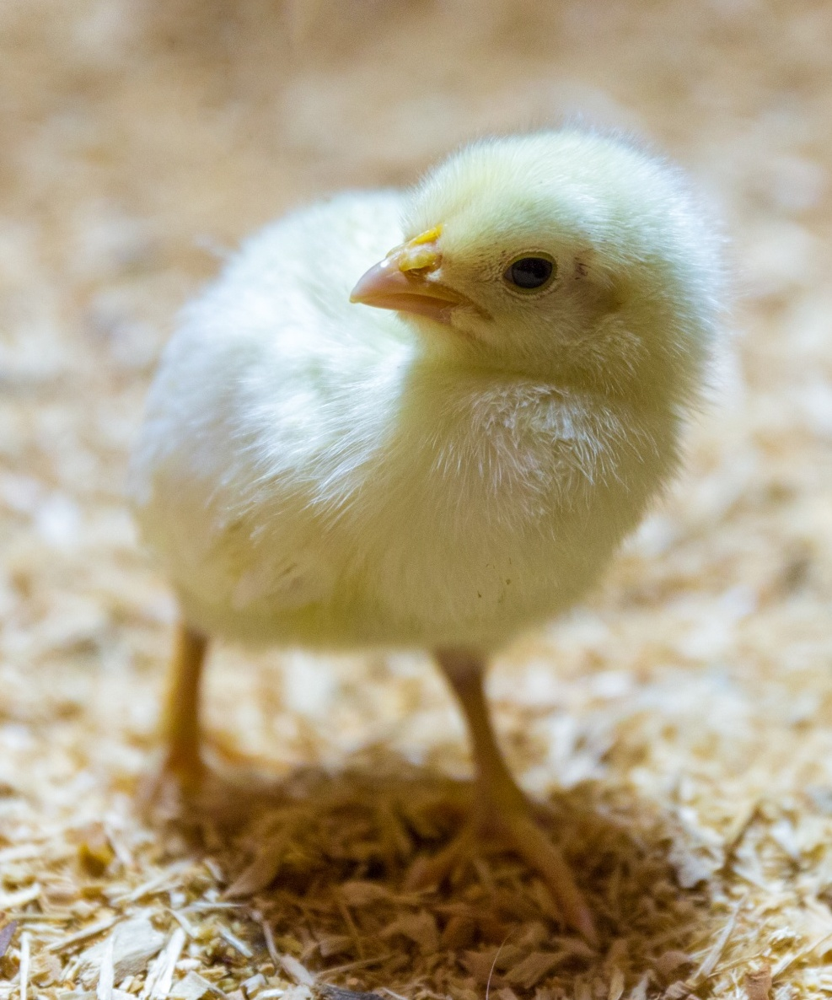
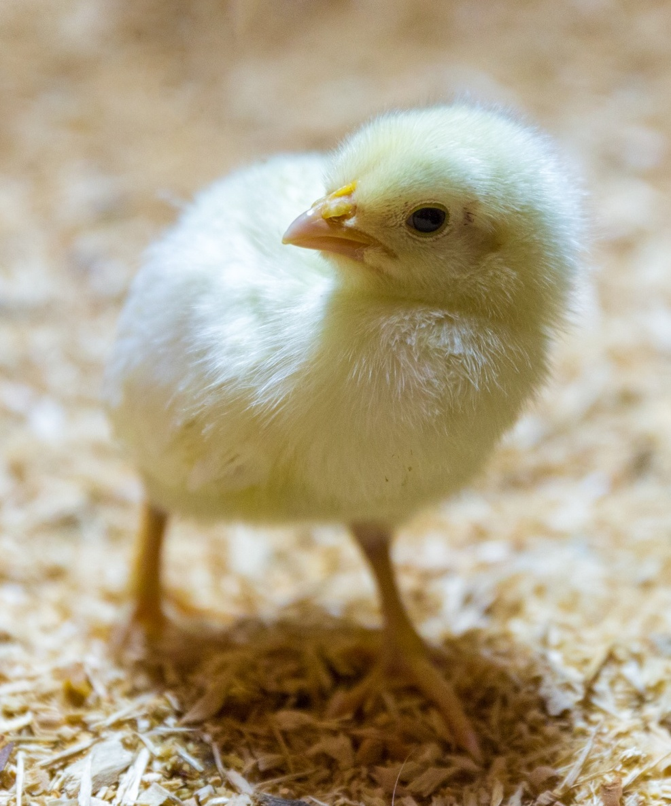

- Picking Images
The first step is to find two images that will look good as a hybrid image.
A good way to do this is to find images that share features, such as eyes, that
can be used to align the images. One image will need to be designated as the
high-pass image, the image that will be most visible when the picture is large/
viewed up close. The other will be designated as the low-pass image, the image
that will be visible when the image is very small/viewed from far away.
- Convert Low-Pass Image to Greyscale
The designated low-pass image is converted to greyscale before any filtering
takes place. This helps the color in the high-pass image show its colors well
when viewing up close without mashing with the designated low-pass's colors.
- Pre-filtering 2D Fourier Transforms
The log magnitudes of the Fourier transforms of the designated low-pass
(in greyscale) and high-pass images are calculated and plotted.
- Choose Alignment Points
Two points are chosen on each image to be used to align and scale the images
appropriately. For instance, if each picture contained a set of eyes, the eyes
on each image would be a possible good pick to align and scale on.
- Filtering
Each image is passed through their designated filters. The designated
low-pass image is passed through a standard 2D Gaussian filter. The
designated high-pass image is passed the impulse filter minus the Gaussian
filter. The cutoff-frequency for each filter was tuned for each set of
images processed, since it is a good point of calibration to maximize the
hybrid effect.
- Filtered Images 2D Fourier Transforms
The log magnitudes of the Fourier transforms of the low-pass and high-pass
filtered images are calculated and plotted.
- Create Hybrid Image
The two filtered images are averaged together to create the hybrid image.
- Hybrid Image Cropping
The raw hybrid image is cropped to get the core hybrid features only, and
cut out the often choppy and overlapped borders.
- Hybrid Image Pyramid
A few levels of a Gaussian pyramid of the final cropped hybrid image are
generated so that the effect of the high-pass intense viewpoint can be seen
changing to the low-pass intense viewpoint.
 
